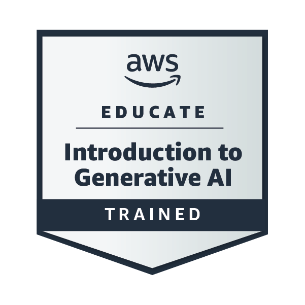

Cloud Foundations
AWS fundamentals, cloud concepts, service awareness, and deployment-minded thinking.
Open to company opportunities
I am preparing for professional roles where disciplined learning, clear communication, and reliable execution matter. My current focus is cloud computing, machine learning fundamentals, and practical technology problem solving.

About
This portfolio is structured for recruiters, hiring teams, and company reviewers who want a fast view of my learning path and credentials.
I am interested in entry-level opportunities, internships, and project-based work connected to cloud platforms, machine learning, data workflows, technical support, and software development foundations.
Skills
AWS fundamentals, cloud concepts, service awareness, and deployment-minded thinking.
Core ML concepts, model workflow awareness, data preparation thinking, and applied learning.
Consistent learning, documentation, communication, and a company-focused work attitude.
Projects
Smart India Hackathon project
A space exploration web application built to make NASA and ISRO-inspired data easier to explore through interactive learning, mission information, space visuals, and audio-based data interpretation.
View Project on GitHubAcademic software project
A role-based LMS application designed for administrators, instructors, and students to manage learning workflows through courses, assignments, quizzes, timetables, fees, user profiles, and analytics.
Certificates

Badge
Training badge showing foundational learning in generative AI concepts through AWS Educate.
Direction
Build a dependable technical base through certified cloud and machine learning study.
Apply concepts through projects, documentation, and practical problem solving.
Contribute to a team where learning speed, ownership, and communication are valued.
Contact
Add your email, phone number, LinkedIn, GitHub, and resume link here before sharing this portfolio with companies.
Email: dhangarsachin140@gmail.com
Phone: +91 95555 07249
LinkedIn: www.linkedin.com/in/sachin-dhangar-241230387
GitHub: github.com/Sachindh-06
Codolio: codolio.com/profile/sachin_dh